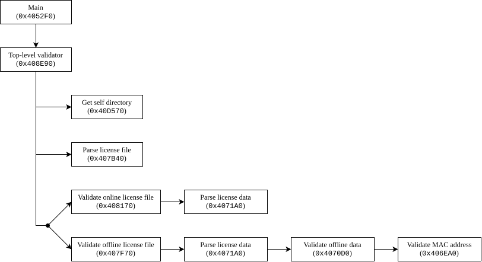

Reverse engineering and bypassing license verification by flipping a bit
Table of Contents
- 1. Introduction
- 2. Analyzing the license validation code
- 2.1. Locating the top-level validation function
- 2.2. Analyzing the top-level validation function
- 2.3. Analyzing the base path function
- 2.4. Analyzing the license file parser
- 2.5. Analyzing the online file validator
- 2.6. Analyzing the license data validator
- 2.7. Analyzing the offline file validator
- 2.8. Analyzing the MAC address validator
- 3. Patching the binary
1. Introduction
This article explains how to reverse-engineer the license validation code of an IDE program, and how it can be bypassed at different levels. The content in this article is for educational purposes only, and tries to raise awareness among software developers and security researchers; I am not responsible for any misuse.
I recently bought a development board which uses uses a Gowin GW1NR-9 FPGA chip. Different steps are needed to program an FPGA, including synthetization, place and route, and the programming itself. The Gowin EDA (Electronic Design Automation) tool was developed by Gowin to perform all these tasks from a single GUI program. Unfortunately, the Gowin EDA requires a license which you must request from them, providing your personal details and the MAC address of your PC.
For this article, the GNU/Linux version of Gowin EDA 1.9.12.02 will be used, which can be downloaded from this link. I have personally installed it from the Arch User Repository (AUR), and the file structure after the installation is:
/opt/gowin-eda-ide/: Main installation directory of the Gowin EDA. Contains binaries, libraries, data, etc./usr/bin/gw_ide: Simple script which exports the Gowin library path (/opt/gowin-eda-ide/lib) for the dynamic loader and transfers control to the main binary (/opt/gowin-eda-ide/bin/gw_ide).
By inspecting the type of that binary, we can determine that it is a 64-bit ELF executable whose symbols have been stripped.
$ file /opt/gowin-eda-ide/bin/gw_ide /opt/gowin-eda-ide/bin/gw_ide: ELF 64-bit LSB executable, x86-64, version 1 (SYSV), dynamically linked, interpreter /lib64/ld-linux-x86-64.so.2, for GNU/Linux 2.6.32, stripped
Note that this article will use the CLI version of Rizin, an open-source reverse engineering framework, but other GUI tools such as Cutter, Ghidra or IDA Pro.
2. Analyzing the license validation code
That binary file is not too big for an executable, only around 69 kilobytes in
size, but it’s worth having a look inside, since it must either contain or call
the license validation code. First, tell rizin to analyze the binary with aaa.
$ rizin /opt/gowin-eda-ide/bin/gw_ide [0x0040563d]> aaa [x] Analyze all flags starting with sym. and entry0 (aa) [x] Analyze function calls [x] Analyze len bytes of instructions for references [x] Check for classes [x] Analyze local variables and arguments [x] Type matching analysis for all functions [x] Applied 0 FLIRT signatures via sigdb [x] Propagate noreturn information [x] Integrate dwarf function information. [x] Resolve pointers to data sections [x] Use -AA or aaaa to perform additional experimental analysis. [0x0040563d]>
Then, we can take a look at the list of strings with the iz command. We can
filter the output of the command with the ~TERM syntax; in this case, looking
for strings containing “license”.
[0x0040563d]> iz ~license 7 0x0000d8a6 0x0040d8a6 29 30 .rodata ascii License verification failed.\n 9 0x0000d8ca 0x0040d8ca 19 20 .rodata ascii /license_config_gui 15 0x0000d920 0x0040d920 25 26 .rodata ascii License information lost. 16 0x0000d93a 0x0040d93a 23 24 .rodata ascii License mode not match. 17 0x0000d952 0x0040d952 25 26 .rodata ascii License hostid not match. 18 0x0000d96c 0x0040d96c 26 27 .rodata ascii No more license available. 27 0x0000da21 0x0040da21 23 24 .rodata ascii The license expires in 29 0x0000da40 0x0040da40 26 27 .rodata ascii The license expires today. 38 0x0000dac9 0x0040dac9 14 15 .rodata ascii /gwlicense.ini 41 0x0000daf0 0x0040daf0 59 60 .rodata ascii Invalid license file, check if this file has been modified. 42 0x0000db30 0x0040db30 72 73 .rodata ascii Software require license 2.0 file, please contact GOWIN for new license. 44 0x0000dba8 0x0040dba8 31 32 .rodata ascii The license expires in one day. 46 0x0000dbf8 0x0040dbf8 38 39 .rodata ascii License created by Gowin_LIC_Generator
There are a lot of matches. Furthermore, the unfiltered string list is not too long, and it contains some interesting strings that stand out, like some public and private keys. This means that we are probably in the right binary.
2.1. Locating the top-level validation function
From the strings we found, the “License verification failed” string is the most
promising. We can inspect its cross-references with the axt command. The @
0x1234 syntax is used to execute an instruction at an specific address (instead
of the current one).
[0x0040563d]> axt @ 0x0040d8a6 main 0x40547e [DATA] lea rsi, str.License_verification_failed.
There is only one cross-reference, a lea instruction inside the main
function. We can inspect the disassembly of that function with the pdf
command. I have filtered the output to only show the relevant instructions.
[0x0040d8a6]> pdf @ 0x40547e ; Omitted... │ 0x00405421 be 01 00 00 00 mov esi, 1 ; int64_t arg2 │ 0x00405426 bf 01 00 00 00 mov edi, 1 ; int64_t arg1 │ 0x0040542b e8 60 3a 00 00 call fcn.00408e90 ; fcn.00408e90 │ 0x00405430 85 c0 test eax, eax │ ┌─< 0x00405432 75 31 jne 0x405465 │ │ 0x00405434 8b 7c 24 1c mov edi, dword [rsp + 0x1c] │ │ 0x00405438 4c 89 f6 mov rsi, r14 │ │ 0x0040543b e8 f0 ee ff ff call imp.launchIDE(int, char**) ; sy │ │ 0x00405440 41 89 c4 mov r12d, eax │ │ ; CODE XREF from main @ 0x4055a8 │ ┌──> 0x00405443 48 89 ef mov rdi, rbp │ ╎│ 0x00405446 e8 d5 f0 ff ff call imp.QApplication::~QApplication() ; method.Q │ ╎│ 0x0040544b 4c 89 ef mov rdi, r13 ; int64_t arg1 │ ╎│ 0x0040544e e8 ed 02 00 00 call fcn.00405740 ; fcn.00405740 │ ╎│ 0x00405453 48 83 c4 78 add rsp, 0x78 │ ╎│ 0x00405457 44 89 e0 mov eax, r12d │ ╎│ 0x0040545a 5b pop rbx │ ╎│ 0x0040545b 5d pop rbp │ ╎│ 0x0040545c 41 5c pop r12 │ ╎│ 0x0040545e 41 5d pop r13 │ ╎│ 0x00405460 41 5e pop r14 │ ╎│ 0x00405462 41 5f pop r15 │ ╎│ 0x00405464 c3 ret │ ╎└─> 0x00405465 4c 8d 7c 24 48 lea r15, [rsp + 0x48] │ ╎ 0x0040546a 89 c6 mov esi, eax ; unsigned long long arg2 │ ╎ 0x0040546c 4c 89 ff mov rdi, r15 ; int64_t arg1 │ ╎ 0x0040546f e8 2c 11 00 00 call fcn.004065a0 ; fcn.004065a0 │ ╎ 0x00405474 4c 8d 74 24 50 lea r14, [rsp + 0x50] │ ╎ 0x00405479 ba 1d 00 00 00 mov edx, 0x1d ; 29 │ ╎ 0x0040547e 48 8d 35 21 84 00 00 lea rsi, [rip + str.License_verification_failed. ; Omitted...
The string is loaded into the rsi register at the bottom of the code snippet, at
address 0x0040547e.
There are two alternative branches shown in the previous disassembly. First,
some unknown function fcn.00408e90 is called, and the return value is saved in
eax1. If the value of eax is not zero, the
jump to 0x00405465 is taken and the “License verification failed” string is
loaded into rsi; however, if the value of eax was zero, the jump is not
performed and the code from 0x00405434 to 0x00405464 is executed, returning from
main. This disassembly of main can be translated into the following pseudo-code.
int main() { /* ... */ /* * Instructions 0x00405421..0x00405432. * Where 'func' corresponds to 'fcn.00408e90'. */ uint32_t result = func(1, 1); if (result == 0) { /* * Omiting instructions 0x00405434..0x00405464. * Contains call to 'imp.launchIDE', etc. */ return 0; } /* * Instructions 0x00405465..0x0040547e. * Omiting the call to 'fcn.004065a0'. */ const char* str = "License verification failed.\n"; /* ... */ }
It looks like that fcn.00408e90 function is doing some license verification, and
depending on its returned value, the IDE is launched or an error message is shown.
2.2. Analyzing the top-level validation function
If we disassemble this function with pdf, we see that it’s somewhat big. By
using the pdg command on that function, we can instead decompile it using the
Ghidra plugin. The following code shows the relevant parts of the
decompilation, after cleaning the type casts and simplifying the function names.
int fcn00408e90(int64_t arg1, int64_t arg2) { uVar2 = fcn0040d570(0, 0, 0); arg1_00 = imp.operator new[](unsigned long)((uVar2 + 1)); fcn0040d570(arg1_00, uVar2, 0); /* ... */ var_40h = QString.fromAscii_helper(arg1_00, uVar5); QFileInfo.QFileInfo(&var_60h, &var_40h); QFileInfo.absolutePath(&var_50h, &var_60h); /* ... */ var_48h = var_50h; /* ... */ QString.fromUtf8_helper(&var_40h, "/gwlicense.ini", 0xe); QString.append(&var_48h, &var_40h); /* ... */ iVar3 = fcn00407b40((int64_t)&var_48h, (int64_t)&var_58h); if (*var_48h == 0) { /* ... */ var_40h = QString.fromAscii_helper("^(.*):(\\d+)$", 0xc); QRegExp::PatternSyntax(&var_50h, &var_40h, 1, 0); /* ... */ cVar1 = QRegExp.exactMatch(&var_50h, &var_58h); if (cVar1 == '\0') { uVar4 = fcn00407f70((int64_t)&var_58h, arg1 & 0xff, arg2 & 0xff); } else { /* ... */ uVar4 = fcn00408170((int64_t)&var_48h, arg2_00, arg1 & 0xff, arg2 & 0xff, 0, in_stack_00000078); /* ... */ } } else { /* ... */ uVar4 = 0x10; } /* ... */ return uVar4; }
From this, we can see the general structure of the function.
- Calls some
fcn.0040d570function twice, first with null values (likely to calculate some size), and then with an allocated buffer. This buffer is converted between ASCII and UTF-8, and the string"/gwlicense.ini"is appended to it. - Calls some
fcn.00407b40function unconditionally, passing the result of the appended string. The normal execution path continues if this function sets the value of*var_48hto zero, probably because that indicates that it processed the entire input string up to the null-terminator. If the string was not processed entirely,0x10is returned. - A new
QRegExpobject is initialized with the pattern"^(.*):(\\d+)$". It is checked against the second argument offcn.00407b40, likely because that function writes something the buffer which may or may not match the regular expression. - If the regexp matches, function
fcn.00408170is called and its return value is propagated. Otherwise, if the regexp didn’t match functionfcn.00407f70is called, also propagating its return value.
This can be converted into simpler pseudo-code:
int fcn00408e90(int64_t arg1, int64_t arg2) { int length = fcn0040d570(0, 0, 0); char* path_buf = new char[length + 1]; fcn0040d570(path_buf, length, 0); QFileInfo file_info = QFileInfo(path_buf); QString file_dir = file_info.absolutePath(); QString full_path = file_dir + "/gwlicense.ini"; /* ... */ QString parsed; fcn00407b40(full_path, &parsed); if (*full_path != '\0') { /* ... */ return 0x10; } /* ... */ QRegExp rx = QRegExp("^(.*):(\\d+)$"); if (rx.exactMatch(parsed)) { /* ... */ return fcn00408170(full_path, parsed, arg1, arg2, 0, ...); } else { return fcn00407f70(parsed, arg1, arg2); } }
The following sections analyze what each of this functions is doing internally.
2.3. Analyzing the base path function
The first function that is called when validating a license is fcn.0040d570,
apparently to obtain some sort of base path, to which "/gwlicense.ini" will be
appended. It receives 3 arguments, but since the last one is always null, I will
ignore it2.
Since the logic of the function is pretty straight-forward, the following code directly shows the simplified decompilation.
int32_t fcn0040d570(char* out_buf, int32_t buf_size, int32_t* arg3) { char path[4104]; if (realpath("/proc/self/exe", path) == NULL) return -1; int32_t len = strlen(path); if (len > buf_size) return len; memcpy(out_buf, path, len); if (arg3 != NULL) { /* ... */ } return len; }
It simply reads the real path of its own binary, and writes it to an output
buffer. Note that realpath(3) is used to expand symbolic links, relative
paths, etc. This necessary because /proc/self/exe is “a symbolic link containing
the actual pathname of the executed command”, as described in proc(5).
The caller of this function extracts the directory using QFileInfo.absolutePath,
and appends the string "/gwlicense.ini". If we look at the directory where the
gw_ide binary is located, we can see that there is indeed a gwlicense.ini
file. It is a plain text file with just two lines.
$ cat /opt/gowin-eda-ide/bin/gwlicense.ini [license] lic="jinan3016:10559"
This is likely the information of a license validation server, where jinan3016
could be the hostname of a Gowin developer, and 10559 is the port. Naturally, we
aren’t able to access this hostname from our machine, so this isn’t a valid
license file.
2.4. Analyzing the license file parser
After building the full path to the gwlicense.ini file, the top-level function
calls fcn.00407b40, passing it as argument. This function receives the path to
the license file and another string, probably for writing to it.
When decompiling this function, Ghidra generates a lot of labels and goto
statements, while IDA Pro uses more comprehensive loops. The following code
shows a mix of the two for readability.
int fcn00407b40(int64_t arg1, int64_t arg2) { QFile.QFile(&var_58h, arg1); if (QFile.open(&var_58h, 1) == 0) { /* ... */ return 0x10; } QTextStream.QTextStream(&var_48h, &var_58h); QTextStream.setCodec(&var_48h, "UTF-8"); var_60h = QString.fromAscii_helper("lic\\s*=\\s*\"(.*)\"", 0x10); QRegExp.QRegExp(&var_78h, &var_60h, 1, 0); /* ... */ while (!QTextStream.atEnd(&var_48h)) { QTextStream.readLine(&var_68h, &var_48h, 0); if (!QString.startsWith(&var_68h, 0x23, 1) && QRegExp.exactMatch(&var_78h, &var_68h)) { QRegExp.cap(&var_60h, &var_78h, 1); iVar4 = var_60h; /* ... */ var_70h = iVar4; break; } } /* ... */ QString.operator=(arg2, &var_70h); QFileDevice.close(&var_58h); /* ... */ return 0; }
The basic process of the function is:
- Open the file at the path received in
arg1, in this case the path togwlicense.ini. - Declare a
QTextStreamwith UTF-8 codification, which will be used later to read lines of the file. - Declare a
QRegExpwith the pattern"lic\\s*=\\s*\"(.*)\"". - Read lines until the file ends. For each one:
- Ensure the line doesn’t start with
0x23(ASCII'#'); probably because they are considered comments. - Check if the line matches the previous regexp pattern; for example,
lic="FOO". If it does, capture the first regexp group3 (e.g.,FOO) in a variable and break out of the loop.
- Ensure the line doesn’t start with
- Assign the captured regexp match to the second argument.
After simplifying the function, we obtain something more readable.
int fcn00407b40(const QString* path, QString* out_contents) { QFile file = QFile(*path); if (!file.open(QIODevice::ReadOnly)) { /* ... */ return 0x10; } QRegExp rx = QRegExp("lic\\s*=\\s*\"(.*)\""); QString result; QTextStream stream = QTextStream(&file); stream.setCodec("UTF-8"); while (!stream.atEnd()) { QString line = stream.readLine(); if (!line.startsWith('#') && rx.exactMatch(line)) { result = rx.cap(1); break; } } *out_contents = result; file.close(); return 0; }
It simply reads the contents of the lic="..." line and writes it to its second
argument.
2.5. Analyzing the online file validator
After reading the contents of the license file, the top-level function compares
it to the regexp "^(.*):(\\d+)$", if it matches, the function fcn.00408170
is called.
This function is pretty big, and even the simplified decompilation is too big for this article. In short, what the function does is:
- Build
QTcpSocketfrom first two arguments (host and port). Connect to it with a 5 second timeout. Build
QVariantMapand convert to JSON:{ "cmd": "check", "user-name": currentUserName(), "host-name": QHostInfo::localHostName(), "pid": getpid(), }- Encrypt with public key of the server, which is embedded in the binary as a
string. This is done through
fcn.406420. - Build
QDataStreamfrom socket, send signed payload. - Read first 4 bytes from the server to get the response body size; this is retried up to 5 times, waiting 100ms between attempts. Then, wait for the socket to receive the full response; this is also retried 5 times with the same delay.
- Read the full response from the server into a
QByteArray. - Decrypt the response from the server with the private key of the client (us),
which is also embedded in the binary as a plain string. This is done through
fcn.406550. - Convert the decrypted response to a
QJsonDocument, and then to aQVariantMap. - Extract the
"lic"field from the deserialized JSON to aQByteArray. - Call
fcn.4071A0to parse and verify the license into an unknownParsedLicensestructure. If the license is invalid, return an error. This step is important, and will be expanded below. - Obtain the current date using
QDate.currentDate(), and compare it to the “expiry date” field of theParsedLicensestructure. If the license is expired, return an error. - Write the
ParsedLicenseto an output structure, if specified as the 5th argument of the function. - On success, return the
"res"field of the JSON that was received from the server.
As mentioned, the license parsing function (fcn.4071A0) will be examined below,
but it’s important to note something from the caller first. This license parsing
function receives a data structure which I labeled ParsedLicense, and we can
determine the offset of its “expiry date” field from the date comparison
code. The following assembly snippet shows all relevant instructions surrounding
the call to the license parser from the online validation function.
0x004081e8 4c 8d a4 24 10 01 00 00 lea r12, [rsp + 0x110] ; ... 0x00408b95 4c 89 e6 mov rsi, r12 ; ... 0x00408bb1 48 b8 00 00 00 00 00 00 00 80 movabs rax, 0x8000000000000000 ; LLONG_MIN 0x00408bbb 48 89 84 24 28 01 00 00 mov qword [rsp + 0x128], rax ; ... 0x00408bcb e8 d0 e5 ff ff call fcn.004071a0 ; License parser ; ... 0x00408bdd e8 6e bc ff ff call QDate::currentDate() 0x00408be2 48 3b 84 24 28 01 00 00 cmp rax, qword [rsp + 0x128]
The current date (result of calling QDate::currentDate, stored in rax) is
compared against some 8-byte location on the stack at [rsp + 0x128]4, which was cleared at 0x00408bbb; this 0x128
is the position on the stack frame where the “expiry date” field resides. Since
fcn.004071a0 receives its “destination pointer” parameter in its second
argument (this will be shown below), the base of the ParsedLicense structure
must be loaded into the rsi register by the caller. The last write to the rsi
register was at 0x00408b95, using the value of r12; the last write to r12 was at
0x004081e8, using the address of [rsp + 0x110]5.
Therefore, 0x110 is the offset on the stack frame where the structure starts,
and 0x128 is the offset where the “expiry date” lives; 0x18 is the offset in the
ParsedLicense structure. This will be very clear below, when looking at the
license data validator.
2.6. Analyzing the license data validator
The fcn.004071a0 function is the license data parser and validator. The
decompilation by Ghidra is a bit big, so the following code has been simplified
to reduce conditional nesting, improve function and variable names, etc.
bool fcn004071a0(const QByteArray* fileData, LicenseData* outLicData) { QTextStream stream = QTextStream(fileData); QByteArray licenseText; QByteArray signature; while (!stream.atEnd()) { QString line = stream.readLine(); if (line == "-------------------------- BEGIN SIGN --------------------------") break; licenseText.append(line.toUtf8()); licenseText.append('\n'); } while (!stream.atEnd()) { QString line = stream.readLine(); if (line == "--------------------------- END SIGN ---------------------------") break; signature.append(QByteArray::fromHex(line.toUtf8())); } if (!fcn004060e0(signature, licenseText)) { bool isGowinLicense = licenseText.indexOf("License created by Gowin_LIC_Generator") != -1; return isGowinLicense ? 3 : 4; } static QRegExp lineRegex = QRegExp("^(\\w+)\\s*=\\s*(\\S+)?$"); QTextStream licStream = QTextStream(&licenseText); while (!licStream.atEnd()) { QString line = licStream.readLine(); if (line.startsWith('#')) continue; if (lineRegex.indexIn(line) == -1) continue; QString key = lineRegex.cap(1); QString value = lineRegex.cap(2); if (key == "MODE") outLicData->mode = value; /* offset 0x00 */ if (key == "TYPE") outLicData->type = value; /* offset 0x08 */ if (key == "HOST_ID") outLicData->hostId = value; /* offset 0x10 */ if (key == "EXP_DATE") outLicData->expiry = QDate::fromString(value, "yyyy-MM-dd"); /* offset 0x18 */ if (key == "COUNT") outLicData->count = value.toInt(); /* offset 0x20 */ } if (outLicData->mode.isEmpty() || outLicData->type.isEmpty() || outLicData->hostId.isEmpty() || outLicData->expiry > 0x16d3e147973) return 5; if (outLicData->mode == "FLOATING" && outLicData->count == -1) return 5; return 0; }
The logic of the function is as follows:
- Read the license text before the RSA signature into a buffer by scanning for the “begin” marker.
- Read the RSA signature block into a buffer by scanning for the “end” marker.
- Verify the license text against RSA signature using
fcn.004060e0. If it doesn’t match, the returned error code changes depending on whether or not a string is found. - The
key=valueportion of the license is parsed, matching it against a regular expression for capturing the key and value separately. It ensures that it is not a comment, and then compares the key against 5 possibilities. Depending on the key, a different offset is used for storing the value inside the structure. - Finally, the function ensures that the license fields are present, and that
the license date is within range6. If the license mode is floating
(obtained from a server), it ensures that the “count” value is not
-1.
The offset used when storing the EXP_DATE matches what we discovered in the
previous section.
2.7. Analyzing the offline file validator
Let’s go back to the top-level validation function, fcn00408e90. After obtaining
the contents of the license file, if they don’t match the regexp
"^(.*):(\\d+)$", we can see that fcn.00407f70 is called instead of fcn.00408170
(the online-validation function).
Again, the following code shows its simplified decompilation.
int fcn00407f70(const QString* filePath, uint8_t arg2, uint8_t arg3) { QFile file = QFile(filePath); if (!file.open(QIODevice::ReadOnly)) return 1; QByteArray fileData = file.readAll(); if (file.error() != QFileDevice::NoError) return 2; file.close(); ParsedLicense parsedLicense; int result = fcn4071A0(&fileData, &parsedLicense); if (result != 0) return result; return fcn4070D0(&parsedLicense, arg2, arg3); }
We can see that it also calls fcn.4071A0, the same license data parsing function
as the online validator, passing the file contents along with the pointer to an
output ParsedLicense structure.
Finally, an unknown function fcn.4070D0 is called, passing a pointer to the
parsed license structure, and the second and third arguments it received.
2.8. Analyzing the MAC address validator
After parsing the license data, the offline file validator calls fcn.4070D0. The
following code shows its simplified definition.
int fcn4070D0(const ParsedLicense* lic, bool arg2, bool arg3) { if (lic->mode != "NODELOCK") return 6; if (!fcn406EA0(&lic->hostId)) return 7; if (lic->expiry < QDate::currentDate()) return 8; if (arg2) { /* Show expiry warning through 'fcn.4067E0' */ } return 0; }
This function essentially does two things, call some unknown fcn.406EA0
function, and validate the expiry date. Let’s inspect the definition of
fcn.406EA0. It receives the hostId member of the ParsedLicense, and returns a
boolean.
bool fcn406EA0(const QString* expectedHostId) { QList<QNetworkInterface> interfaces = QNetworkInterface::allInterfaces(); for (const QNetworkInterface& iface : interfaces) { QString mac = iface.hardwareAddress().remove(':', Qt::CaseSensitive); if (mac.isEmpty()) continue; if (mac.compare(*expectedHostId, Qt::CaseInsensitive) == 0) return true; } return false; }
This function obtains all network interfaces, iterates over each one, and checks
if any of the MAC addresses match the received argument (case-insensitively and
without the colons). Therefore, this function validates that the MAC address
received in the HOST_ID value of the nodelock/offline license matches any of the
MAC addresses from the current device.
Note how the online/floating license validator doesn’t call any of these functions; instead, it manually checked the expiry date.
3. Patching the binary
Now that we have the full picture on how the license validation works, we can start thinking about how the binary could be patched to bypass it. The following diagram shows how the validation functions interact with each other.

Before getting into the possible methods, it’s important to backup the gw_ide
binary.
cp /opt/gowin-eda-ide/bin/gw_ide gw_ide.original
3.1. Generating our own license
One of the most interesting solutions would be to generate our own RSA-1024 key pair, write and sign our own nodelock license (associated to our MAC address), and then replace the public key in the binary with our own.
Generating the key pair is simple. From Linux:
openssl genrsa -out my_private.pem 1024
openssl rsa -in my_private.pem -pubout -out my_public.pem
Then, generate a valid license body with a MAC address from your machine.
cat > license_content.txt << EOF MODE=NODELOCK TYPE=Full HOST_ID=$(ip link show | awk '/ether/ { print $2; exit }' | tr -d ':' | tr 'a-f' 'A-F') EXP_DATE=2099-12-31 COUNT=1 EOF
Then, sign the license body with the generated private key, saving the signature as hexadecimal ASCII.
openssl dgst -sha256 -sign my_private.pem -out sig.bin license_content.txt
hexdump -ve '1/1 "%02x"' sig.bin > sig_hex.txt
cat license_content.txt > my_license.lic echo "-------------------------- BEGIN SIGN --------------------------" >> my_license.lic cat sig_hex.txt >> my_license.lic echo -e "\n--------------------------- END SIGN ---------------------------" >> my_license.lic
We have generated a valid license, but we need to place our public RSA-1024 key in the binary. Since all RSA-1024 public keys are the same length, we can replace it directly7. This can be done from Rizin, but it’s easier to use a python script that directly replaces the string.
with open("my_public.pem") as f: new_key = f.read().strip() # strip trailing newline from file old_key = ( "-----BEGIN PUBLIC KEY-----\n" "MIGfMA0GCSqGSIb3DQEBAQUAA4GNADCBiQKBgQDicOsV7qRM8ReSKExxF0wD+xF7\n" "Jc1YqXFejXu9XpONB+yjZ4X+KUkYL2AY6AWFDlV0KFWccG/CCGrJRetLrg/EqcbU\n" "7laQnU5wJSNlWf+n0g93g4JHVm1KClpJUXIq1Jb9WGR3mG6rmKRGp+iktqbn5Gwh\n" "sDdmPxJC+BWJj73BpwIDAQAB\n" "-----END PUBLIC KEY-----" ) old_bytes = old_key.encode() new_bytes = new_key.encode() assert len(old_bytes) == len(new_bytes), \ f"Key length mismatch: {len(old_bytes)} vs {len(new_bytes)}" with open("/opt/gowin-eda-ide/bin/gw_ide", "rb") as f: data = f.read() assert old_bytes in data, "Old public key not found in binary!" patched = data.replace(old_bytes, new_bytes, 1) with open("gw_ide.patched", "wb") as f: f.write(patched) print("Patched successfully.")
Then, we can replace the binary on the destination directory, verifying that the permissions are correct.
sudo cp gw_ide.patched /opt/gowin-eda-ide/bin/gw_ide ls -l /opt/gowin-eda-ide/bin/gw_ide # -rwxr-xr-x 1 root root 69088 Jan 01 00:00 /opt/gowin-eda-ide/bin/gw_ide
If we now launch the IDE, we should be able to load our custom license, and it will be authenticated with the public key we just replaced.
Note that this patch makes the floating license verification useless, since the public key used to verify the signature of the nodelock license is also used to encrypt messages sent to the floating license server. If the public key on the binary changes, the server won’t be able to decrypt our messages with its private key.
3.2. Avoiding the validation entirely
Since the nodelock licenses are signed, we can’t generate a valid license without patching the public key in binary. Instead of patching this, we could simply patch the instructions that validate the license to skip it entirely.
There are multiple places where this could be done. Let’s look at the call to
the top-level validator, fcn.408E90.
; ... 0x00405421 be 01 00 00 00 mov esi, 1 0x00405426 bf 01 00 00 00 mov edi, 1 0x0040542b e8 60 3a 00 00 call fcn.00408e90 0x00405430 85 c0 test eax, eax 0x00405432 75 31 jne 0x405465 ; ...
3.2.1. Patching the call to the top-level function
First, we could patch the call itself, which is 5 bytes. By changing the call
instruction to a xor eax, eax and 3 nop bytes, we can set eax to zero, making
the jump condition false. The following snippet shows the instruction change.
; Original: 0x0040542b e8 60 3a 00 00 call fcn.00408e90 ; Patched: 0x0040542b 31 c0 xor eax, eax 0x0040542d 90 nop 0x0040542e 90 nop 0x0040542f 90 nop
To patch this from Rizin, the binary has to be open as writable by passing the
-w argument. Then, we can replace the instructions by passing the new opcodes to
the wx Rizin command.
$ rizin -w / wx 31c0909090 @ 0x0040542b
3.2.2. Patching the test of the validation result
Instead of replacing 5 bytes, we can just replace the byte of the test
instruction, turning it into a xor.
; Original: 0x00405430 85 c0 test eax, eax ; Patched: 0x00405430 31 c0 xor eax, eax ; Alternative patched: 0x00405430 33 c0 xor eax, eax
Note that the xor instruction can be encoded as 0x31 or 0x33, depending on
whether the instruction accepts r/m32 as the destination and r32 as the source,
or r32 as the destination and r/m32 as the source. Both produce the same result.
3.2.3. Flipping a bit on the jump opcode
Finally, the license valication can be skipped by patching a single bit on the
binary. This can be done by replacing the opcode of the jne (i.e., jnz)
instruction with the opcode of a je (i.e., jz) instruction, since they only
differ in the least significant bit.
; Original: 0x00405432 75 31 jne 0x405465 ; Patched: 0x00405432 74 31 je 0x405465
With this change, the license validation logic is inverted; whenever the function returns non-zero, the jump will be skipped, launching the IDE. Note however, that valid licenses will produce an error.
Footnotes:
According to Section 3.2.3 and Figure 3.4 of the AMD64 calling
convention, the first two arguments are passed in rdi and rsi, and the return
value is passed to the caller in rax.
If the function receives a non-null pointer as its third argument, it iterates the output path looking for the index of the last slash, and then writes it to the integer that the third argument points to.
Note that the
index parameter of the QRegExp::cap function uses a special value 0 to
indicate “the entire match”, that is, the entire regular
expression. Therefore, the explicit capture groups, specified in the regexp
with the (...) syntax, start from index 1.
If you
are not familiar with how local variables are stored on the stack, functions
usually decrease the rsp register in the function prologue to reserve space for
local variables, and then add positive offsets to that register to access
addresses of that reserved space. In this function, rsp was decreased by 0x148
in 0x408184, reserving 328 bytes; this is where the ParsedLicense structure
lives, until the function returns.
We are able to easily trace
back the write to r12 because it is callee-saved according to Section 3.2.1 of
the AMD64 ABI. This means that, although functions might use r12 internally,
they are required to restore its value before returning.
Since QDate stores dates as a 64-bit
Julian Day Number, the value 0x16d3e147973 is used to represent an invalid
date, many centuries into the future.
Even if the length of public keys varied slightly, we could play with the newlines. Since they are ignored, we could remove the ones from the orignal string, allocating some space, and then append our own at the end of our license, filling the entire buffer.